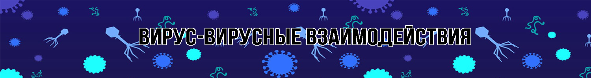

Непрямая трансактивация гетерологичных вирусных генов
Измененная восприимчивость хозяина из-за нарушения физических барьеров
Измененная восприимчивость хозяина из-за измененной экспрессии рецептора
Гетерологичная активация пролекарств
Модификация антивирусного состояния, индуцированного интерфероном
Измененная активация иммунных клеток
ВВВ индуцированный аутоиммунитет
О вирусе/вирусах:
Описание взаимодействия: Присоединение и проникновение цитомегаловируса человека (HCMV) стимулирует экспрессию клеточных генов, индуцируемых интерфероном, многие из которых нацелены на важные клеточные функции, необходимые для репликации вируса. Двухцепочечная РНК-зависимая протеинкиназа хозяина (PKR) представляет собой индуцируемый интерфероном генный продукт, который ограничивает репликацию вируса, подавляя трансляцию белка в инфицированной клетке. Ожидалось, что HCMV кодирует генные продукты, которые способствуют уклонению от этого PKR-опосредованного противовирусного ответа. Используя рекомбинант вируса простого герпеса типа 1 deltagamma1 34,5 (HSV-1), который запускает PKR-опосредованное отключение синтеза белка, эксперименты идентифицировали продукт гена HCMV, экспрессируемый в первые часы инфекции, что позволяет продолжать синтез белка в инфицированной клетке. Рекомбинантные вирусы HSV-1, экспрессирующие белок TRS1 или IRS1 HCMV, демонстрируют, что любой из этих продуктов гена HCMV позволяет рекомбинантным вирусам deltagamma1 34.5 уклоняться от PKR-опосредованного отключения белка и поддерживать поздний синтез вирусного белка.
Источник: https://www.ncbi.nlm.nih.gov/pmc/articles/pmid/15994764/